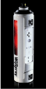

Legal grind
Legal grind  One chance
One chance  For the rush
For the rush
THis can be a title
A picture can go here with CSS control

WiiSpray:
Graffiti, without the legal hassles
If blank walls tend to stir your graffiti urges, the Nintendo Wii may soon offer a solution that doesn't involve arrests of any kind.
If blank walls tend to stir your graffiti urges, the Nintendo Wii may soon offer a solution that doesn't involve arrests of any kind.